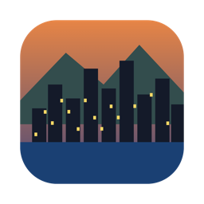

Rainjack
A third person crime game you can play right here, on a computer or a phone, set in Vancouver and Victoria. Jack a car on Granville, outrun the cops across the Burrard Bridge, then switch to Alexandre in Victoria.
Play in your browser Real streets (new) Real Vancouver (beta) Download appsThe real game, running live. Click in and play.
Real streets
Hastings, Georgia, Robson, Granville, Stanley Park, False Creek, Science World, BC Place and the Legislature.
A living city
Every neighbourhood has its own crowd: the Downtown Eastside, Gastown tourists, West End money, Yaletown, Kits joggers and Victoria retirees. People bump into you, talk to you, or start something. Gulls, traffic, and rain that comes and goes.
Three heroes
Joshua in Gastown, Ben in Kits, Alexandre in Victoria. Tab between them. Each has his own perks: more cash, faster fists, steadier aim.
Cars, cops, guns
Sedans, taxis, buses and sports cars, a five star wanted level and cops who give chase.
Fists and stars
Punch people and they fight back or run. Three hits and they drop. One star for a punch, five for taking on the cops. Deliveries, taxi fares, chases, XP and achievements.
Where it's going
Now
Punch, shoot, steal cars, five star chases, missions, XP, achievements. Web, iPhone, Android, Mac, Windows and Linux.
Beta
Real Vancouver: the actual city streamed as Google photorealistic 3D tiles. Walk and drive it today.
Next
Gameplay on the real city, more weapons, radio, rain, day and night, a ferry to Victoria.
Later
An Unreal Engine 5 version built through Unreal's own MCP, with real physics and lighting.